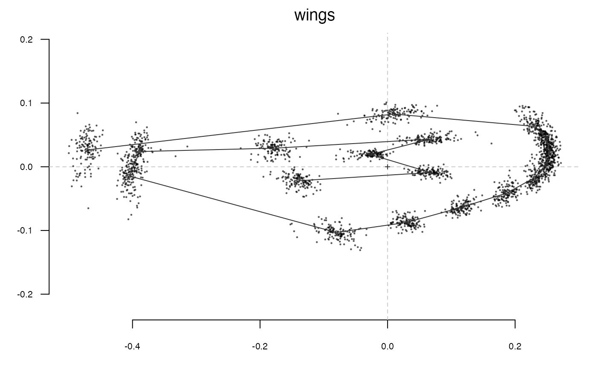
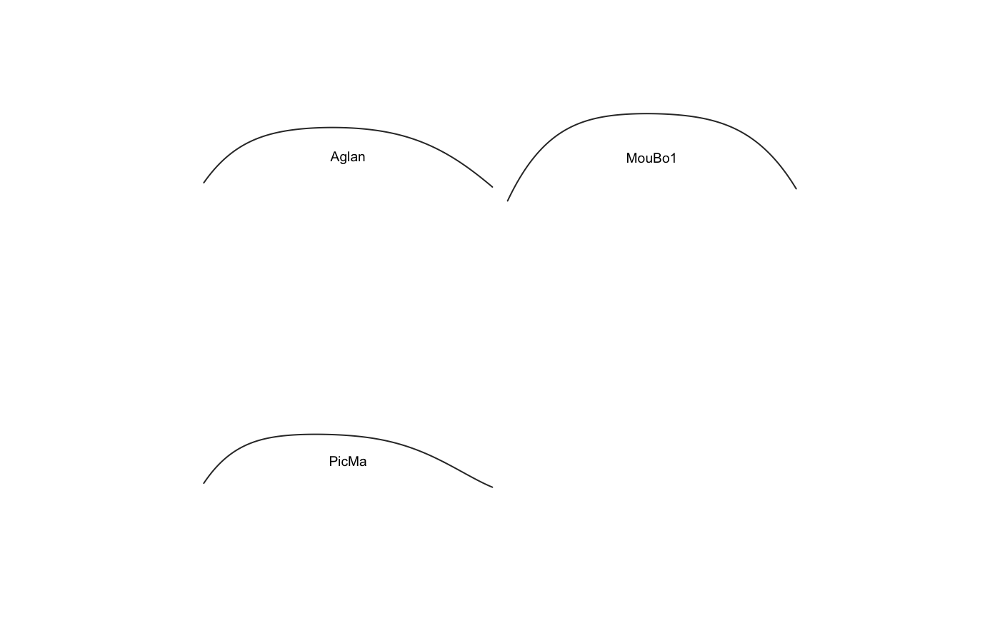
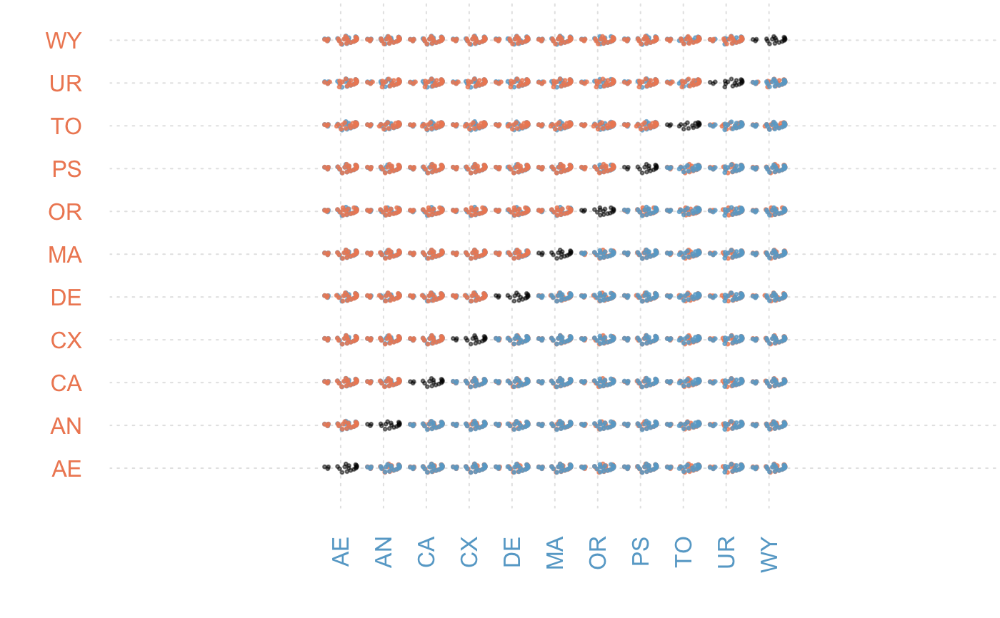
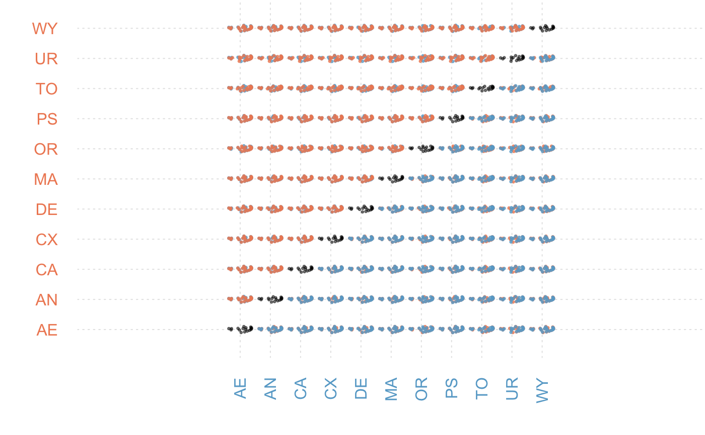

Quite a versatile function that calculates mean (or median, or whatever function) on list or an array of shapes, an Ldk object. It can also be used on OutCoe and OpnCoe objects. In that case, the reverse transformation (from coefficients to shapes) is calculated, (within groups defined with the fac argument if provided) and the Coe object is returned.
mshapes(x, ...) # S3 method for list mshapes(x, FUN = mean, ...) # S3 method for array mshapes(x, FUN = mean, ...) # S3 method for Ldk mshapes(x, FUN = mean, ...) # S3 method for OutCoe mshapes(x, fac, FUN = mean, nb.pts = 120, ...) # S3 method for OpnCoe mshapes(x, fac, FUN = mean, nb.pts = 120, ...) # S3 method for LdkCoe mshapes(x, fac, FUN = mean, ...) # S3 method for PCA mshapes(x, fac, ...) MSHAPES(x, ...)
| x | a list, array, Ldk, LdkCoe, OutCoe or OpnCoe or PCA object |
|---|---|
| ... | useless here. |
| FUN | a function to compute the mean shape (mean by default, by median can be considered) |
| fac | factor from the $fac slot (only for Coe objects). See examples below. |
| nb.pts | numeric the number of points for calculated shapes (only Coe objects) |
the averaged shape; on Coe objects, a list with two components: $Coe object of the same class, and
$shp a list of matrices of (x, y) coordinates.
Note that on Coe objects, the average can be made within levels of the passed $fac (if any); in that case, the other columns of the fac are also returned, usingthe first row within every level, but they may not be representive of the group. Also notice that for PCA objects, mean scores are returned within a PCA object (accesible with PCA$x) that can be plotted directly but other slots are left unchanged.
Other multivariate: CLUST,
KMEANS, LDA,
MANOVA_PW, MANOVA,
PCA, classification_metrics
#### on shapes mshapes(wings)#> x y #> 1 -0.472151969 0.026257480 #> 2 0.009588976 0.082756693 #> 3 0.231342520 0.063322047 #> 4 0.249218898 0.044129134 #> 5 0.254361417 0.022457480 #> 6 0.249206299 0.003249606 #> 7 0.230685827 -0.017059843 #> 8 0.186659843 -0.041403937 #> 9 0.116231496 -0.063584252 #> 10 0.030126772 -0.087316535 #> 11 -0.080339370 -0.103129134 #> 12 -0.405025984 -0.014459055 #> 13 -0.388690551 0.023895276 #> 14 -0.177349606 0.029181102 #> 15 0.066421260 0.043376378 #> 16 -0.027141732 0.019349606 #> 17 0.067113386 -0.009022047 #> 18 -0.140259843 -0.022011024mshapes(wings$coo)#> x y #> 1 -0.472151969 0.026257480 #> 2 0.009588976 0.082756693 #> 3 0.231342520 0.063322047 #> 4 0.249218898 0.044129134 #> 5 0.254361417 0.022457480 #> 6 0.249206299 0.003249606 #> 7 0.230685827 -0.017059843 #> 8 0.186659843 -0.041403937 #> 9 0.116231496 -0.063584252 #> 10 0.030126772 -0.087316535 #> 11 -0.080339370 -0.103129134 #> 12 -0.405025984 -0.014459055 #> 13 -0.388690551 0.023895276 #> 14 -0.177349606 0.029181102 #> 15 0.066421260 0.043376378 #> 16 -0.027141732 0.019349606 #> 17 0.067113386 -0.009022047 #> 18 -0.140259843 -0.022011024#> x y #> 1 60.725 419.125 #> 2 58.350 344.200 #> 3 59.025 266.000 #> 4 59.925 189.900 #> 5 60.100 112.650 #> 6 72.025 40.300 #> 7 146.625 21.375 #> 8 222.175 24.600 #> 9 278.800 63.475 #> 10 286.850 136.775 #> 11 287.250 211.100 #> 12 287.925 288.400 #> 13 287.700 365.725 #> 14 283.325 441.375 #> 15 262.675 517.250 #> 16 237.325 586.950 #> 17 222.700 664.275 #> 18 215.900 739.350 #> 19 208.550 809.525 #> 20 137.150 808.650 #> 21 128.475 739.425 #> 22 123.650 663.775 #> 23 109.650 590.000 #> 24 83.625 514.500stack(wings)#>#>mshapes(bot.f) # the mean (global) shape#>#> x y #> [1,] 1.168906286 -0.0001651753 #> [2,] 1.163078247 0.0421600553 #> [3,] 1.145987931 0.0791545836 #> [4,] 1.119080936 0.1068491537 #> [5,] 1.084462899 0.1234921899 #> [6,] 1.044515489 0.1298160330 #> [7,] 1.001501085 0.1286134238 #> [8,] 0.957247869 0.1237878526 #> [9,] 0.912978161 0.1191956670 #> [10,] 0.869298497 0.1176432074 #> [11,] 0.826324964 0.1203279475 #> [12,] 0.783884894 0.1268487171 #> [13,] 0.741725082 0.1357159282 #> [14,] 0.699667837 0.1451353059 #> [15,] 0.657683275 0.1537690869 #> [16,] 0.615878472 0.1612150898 #> [17,] 0.574430083 0.1680667629 #> [18,] 0.533499333 0.1755775102 #> [19,] 0.493164879 0.1850912925 #> [20,] 0.453393981 0.1974710400 #> [21,] 0.414053341 0.2127369864 #> [22,] 0.374945749 0.2300322600 #> [23,] 0.335852608 0.2479030949 #> [24,] 0.296566207 0.2647662777 #> [25,] 0.256905612 0.2793783445 #> [26,] 0.216720688 0.2911371254 #> [27,] 0.175894459 0.3001249134 #> [28,] 0.134352476 0.3069092041 #> [29,] 0.092080418 0.3122084326 #> [30,] 0.049142076 0.3165718347 #> [31,] 0.005684547 0.3202014303 #> [32,] -0.038080617 0.3229727379 #> [33,] -0.081922450 0.3246211931 #> [34,] -0.125651137 0.3249912594 #> [35,] -0.169173183 0.3242231538 #> [36,] -0.212517809 0.3227854829 #> [37,] -0.255819333 0.3213351308 #> [38,] -0.299256747 0.3204663421 #> [39,] -0.342970452 0.3204641335 #> [40,] -0.386988991 0.3211796377 #> [41,] -0.431199127 0.3220947589 #> [42,] -0.475378578 0.3225609447 #> [43,] -0.519286078 0.3221164568 #> [44,] -0.562776943 0.3207428677 #> [45,] -0.605894989 0.3189350982 #> [46,] -0.648891824 0.3175276310 #> [47,] -0.692145046 0.3173174414 #> [48,] -0.735982396 0.3186132956 #> [49,] -0.780457859 0.3208847676 #> [50,] -0.825153563 0.3226624581 #> [51,] -0.869086061 0.3217583294 #> [52,] -0.910772394 0.3157606556 #> [53,] -0.948465170 0.3026542245 #> [54,] -0.980510370 0.2813630409 #> [55,] -1.005735148 0.2520318883 #> [56,] -1.023752227 0.2159499153 #> [57,] -1.035081884 0.1751434820 #> [58,] -1.041039987 0.1317817301 #> [59,] -1.043407694 0.0876037220 #> [60,] -1.043964872 0.0435658071 #> [61,] -1.044013564 -0.0001747867 #> [62,] -1.044025203 -0.0439492146 #> [63,] -1.043512254 -0.0880697136 #> [64,] -1.041161156 -0.1323293477 #> [65,] -1.035188270 -0.1757099138 #> [66,] -1.023817167 -0.2164219884 #> [67,] -1.005743392 -0.2522778444 #> [68,] -0.980460978 -0.2812740940 #> [69,] -0.948369940 -0.3021819671 #> [70,] -0.910650551 -0.3149377945 #> [71,] -0.868957121 -0.3206959085 #> [72,] -0.825030797 -0.3215245758 #> [73,] -0.780344469 -0.3198490360 #> [74,] -0.735871551 -0.3178294420 #> [75,] -0.692023558 -0.3168762464 #> [76,] -0.648746041 -0.3174481558 #> [77,] -0.605716737 -0.3191716238 #> [78,] -0.562567403 -0.3212066058 #> [79,] -0.519056221 -0.3227031290 #> [80,] -0.475145999 -0.3231749465 #> [81,] -0.430982360 -0.3226635945 #> [82,] -0.386801287 -0.3216571441 #> [83,] -0.342815151 -0.3208256181 #> [84,] -0.299125898 -0.3207013096 #> [85,] -0.255696084 -0.3214429085 #> [86,] -0.212381865 -0.3227761919 #> [87,] -0.169007586 -0.3241225855 #> [88,] -0.125448199 -0.3248451835 #> [89,] -0.081686941 -0.3244939182 #> [90,] -0.037829212 -0.3229368063 #> [91,] 0.005927348 -0.3203193572 #> [92,] 0.049350196 -0.3168750705 #> [93,] 0.092232630 -0.3126812931 #> [94,] 0.134436974 -0.3074850475 #> [95,] 0.175910258 -0.3006982100 #> [96,] 0.216675572 -0.2915894535 #> [97,] 0.256811552 -0.2796108642 #> [98,] 0.296433966 -0.2647280865 #> [99,] 0.335687496 -0.2476054872 #> [100,] 0.374746057 -0.2295433326 #> [101,] 0.413812022 -0.2121578168 #> [102,] 0.453102987 -0.1969013652 #> [103,] 0.492820622 -0.1845967071 #> [104,] 0.533107240 -0.1751700190 #> [105,] 0.574006481 -0.1677059544 #> [106,] 0.615448834 -0.1608297786 #> [107,] 0.657277055 -0.1532916765 #> [108,] 0.699311281 -0.1445361651 #> [109,] 0.741434152 -0.1350246853 #> [110,] 0.783660554 -0.1261538349 #> [111,] 0.826152488 -0.1197537224 #> [112,] 0.869151275 -0.1173116512 #> [113,] 0.912825186 -0.1191865197 #> [114,] 0.957062915 -0.1241110447 #> [115,] 1.001270984 -0.1292041692 #> [116,] 1.044245114 -0.1305548005 #> [117,] 1.084175273 -0.1242429094 #> [118,] 1.118812297 -0.1075023934 #> [119,] 1.145778947 -0.0796605231 #> [120,] 1.162963747 -0.0425396294ms <- mshapes(bot.f, 'type') ms$Coe#> An OutCoe object [ elliptical Fourier analysis ] #> -------------------- #> - $coe: 2 outlines described, 12 harmonics #> # A tibble: 2 x 2 #> type fake #> <fct> <fct> #> 1 beer c #> 2 whisky aclass(ms$Coe)#> [1] "OutCoe" "Coe"#> Warning: zero-length arrow is of indeterminate angle and so skipped#> Warning: zero-length arrow is of indeterminate angle and so skipped#> Warning: zero-length arrow is of indeterminate angle and so skipped#> Warning: zero-length arrow is of indeterminate angle and so skipped#>ms <- mshapes(op, 'var') #etc ms$Coe#> An OpnCoe object [ npoly analysis ] #> -------------------- #> - $coe: 4 open outlines described #> - $baseline1: (-0.5; 0), $baseline2: (0.5; 0) #> # A tibble: 3 x 4 #> var domes view ind #> <fct> <fct> <fct> <fct> #> 1 Aglan cult VL O10 #> 2 MouBo1 wild VL O10 #> 3 PicMa cult VL O10#> Ldk (landmarks) #> - 11 landmarks, 18 +/- 0 coords (in $coo) #> - 1 classifiers (in $fac): #> # A tibble: 11 x 1 #> group #> <fct> #> 1 AE #> 2 AN #> 3 CA #> 4 CX #> 5 DE #> 6 MA #> 7 OR #> 8 PS #> 9 TO #> 10 UR #> 11 WY #> - also: $links - also: $slidings